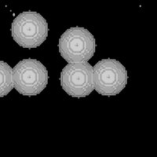
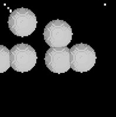
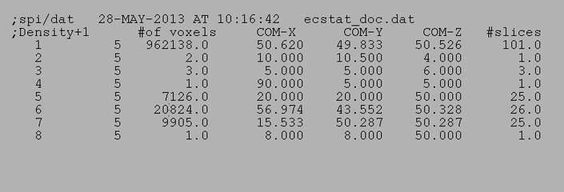
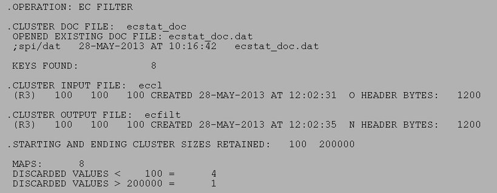
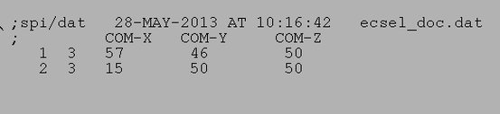
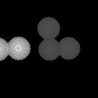
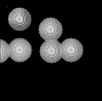

| .OPERATION: | EC CL | ; Extract Connected Clusters |
| .INPUT FILE: | sav_clusters | ; Volume file name (input) |
| .SLICE NUMBERS: | 1-100 | Slices used |
| .THRESHOLD LEVEL: | 0.5 | Threshold level |
| .CLUSTER OUTPUT FILE: | eccl | ; Cluster file name (output) |
| . | ||
| .OPERATION: | EC STAT | ; Extract Connected Clusters - Statistics |
| .CLUSTER FILE: | eccl | ; Cluster file name (input) |
| .STATISTICS DOC FILE: | ecstat_doc | ; Statistics doc file name (output) |
| . | ||
| .OPERATION: | EC FILTER | ; Extract Connected Clusters - Filter |
| .CLUSTER DOC FILE: | ecstat_doc | ; Cluster doc file name (input) |
| .CLUSTER INPUT FILE: | eccl | ; Cluster file name (input) |
| .CLUSTER OUTPUT FILE: | ecfilt | ; Cluster file name (output) |
| . | ||
| .OPERATION: | EC SELECT | ; Extract Connected Clusters - Filter |
| .LOCATION DOC FILE: | ecsel_doc | ; Cluster doc file name (input) |
| .CLUSTER INPUT FILE: | eccl | ; Cluster file name (input) |
| .CLUSTER OUTPUT FILE: | ecfilt | ; Cluster file name (output) |
| . | ||
| .OPERATION: | EC CLOSE | ; Extract Connected Clusters - Merge close clusters |
| .CLUSTER DOC FILE: | ecstat_doc | ; Cluster doc file name (input) |
| .THRESHOLD DISTANCE & STARTING CLUSTER: | 32, 2 | ; Threshold distance, skip cluster 1 |
| .CLUSTER INPUT FILE: | ecfilt | ; Cluster file name (input) |
| .CLUSTER OUTPUT FILE: | ecclose | ; Cluster file name (output) |
| ORIGINAL INPUT VOLUME (Surface) |
|---|
|  |
| clusters_surf |
| ' 'EC CL' OUTPUT CLUSTER VOLUME (Surface) |
|---|
|  |
| eccl_surf |
| 'EC STAT' OUTPUT DOCUMENT FILE |
|---|
|  |
| ecstat_doc |
| 'EC FILTER' INPUT DOCUMENT FILE |
|---|
| ecstat_doc |
| 'EC FILTER' RESULTS FILE |
|---|
|  |
| ecfilt_resu |
| ' 'EC FILTER' OUTPUT CLUSTER VOLUME (Surface) |
|---|
| ecsel_surf |
| 'EC SELECT' INPUT DOCUMENT FILE |
|---|
|  |
| ecsel_doc |
| ' 'EC SELECT' OUTPUT CLUSTER VOLUME (Surface) |
|---|
|  |
| ecsel_surf |
| ' 'EC CLOSE' OUTPUT CLUSTER VOLUME (Surface) |
|---|
|  |
| ecclose_surf |